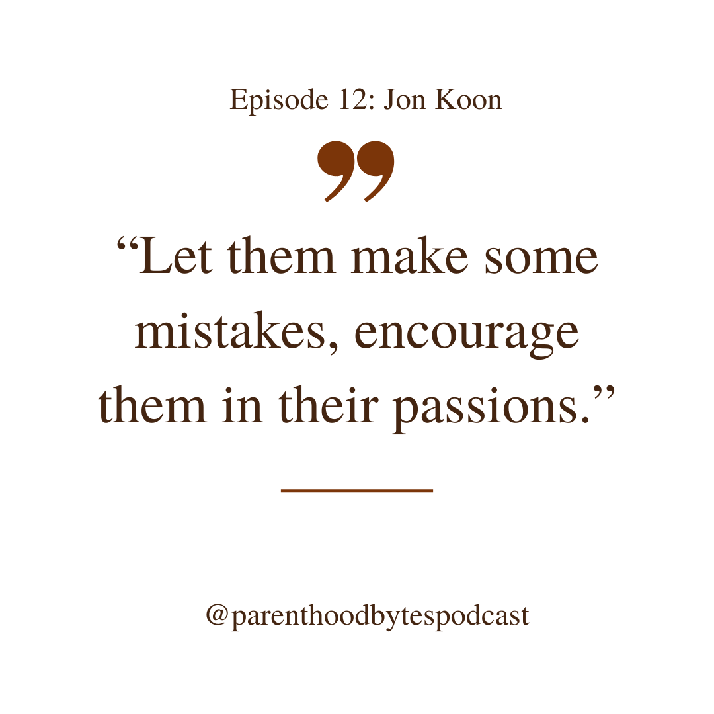

Episode 12: Jon Koon

Episode Notes
In this episode, we engage in a compelling conversation with Jon Koon, an Engineering Leader at Hubspot based in Atlanta, Georgia, who brings 15 years of rich experience in the tech industry. What makes Jon's story particularly unique is not just his professional journey but also his experience of becoming a parent at a younger age than most, raising three children aged 12, 10, and 8. He shares insights into his distinctive parenting journey, having undergone three different types of parental leave.
Jon delves into the crux of work-life balance, emphasizing the importance of setting clear and firm boundaries while establishing expectations both at work and within the family dynamic. His approach to maintaining this balance involves a conscious decision to keep work-related communication channels separate from personal life, with no work emails or Slack on his cell phone. This deliberate choice allows him to be fully present in both professional and family spheres without the constant intrusion of work-related notifications.
A valuable tip Jon offers to parents is to treat their children like little adults, fostering an environment where mistakes are not only allowed but encouraged as part of the learning process. He advocates for supporting children in pursuing their passions and interests rather than forcing them into predetermined molds. Jon stresses the idea that work should be a footnote in the grander narrative of one's relationship with kids and family.
Additionally, Jon highlights the significance of taking full advantage of parental leave opportunities, using this time to connect with and enjoy moments with your children.